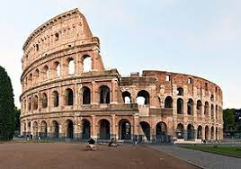
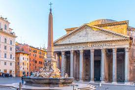
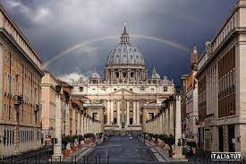
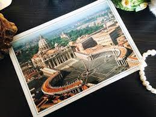
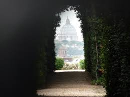
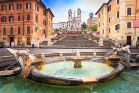

Рим (Италия)
Рим - это "вечный город", который стоит посетить. Путешествие в Италию невозможно представить без посещения Рима! Говорят, что 90% мирового искусства сосредоточено в Италии, а 90% итальянских шедевров находиться именно в Риме. До сих пор существует поговорка, что все дороги ведут в Рим, но в имперские времена оно так и было! Поэтому если вы не знаете, куда поехать, то Рим - это лучшее решение.
Как добраться
Лучший способ добраться из Варшавы в Рим - это самолет, дорога займет 5ч 4мин и будет стоить 95 zł - 480 zł..
Вы также можете выбрать поезд, это будет стоить 500 zł - 1 200 zł и займет примерно 20ч 6мин.
А также автобус, это будет стоить 260 zł - 390 zł и займет 29ч 25мин.
Достопримечательности
Колизей
Это величественный символ древнего Рима, ставший одной из главных достопримечательностей не только в городе, но и во всём мире.Это монументальное сооружение, которое, к слову, было возведено в первые годы нашей эры, на протяжении 5 столетий было свидетелем известных и зачастую кровавых событий. Здесь проводились ожесточенные гладиаторские бои, жестокие казни, пытки рабов, выставки экзотических животных и другие впечатляющие представления.
Пантеон
Ещё один символ древнеримской архитектуры, появившийся в эпоху наивысшего расцвета искусства. “Храм всех богов”, построенный ещё в первые десятилетия нашей эры. Внешне пантеон представляет собой гигантскую ротонду, покрытую куполом-полусферой диаметром 45 метров. Вся высота сооружения составляет 42 метра, а в самой вершине купола есть сквозное отверстие шириной 9 метров, именуемое “Оком Пантеона”. Особенно впечатляет это здание, когда оказываешься внутри него - здесь одновременно ощущается грандиозность сооружения и изящество его внутреннего убранства.
Ватикан
В самом сердце Рима находится самое маленькое в мире государство — Ватикан, центр католичества и резиденция Папы Римского. Мини-страна имеет всего около 800 граждан, большинство из которых — служащие католической церкви. Нигде в Риме нет такого обилия важных культурно-исторических ценностей, как здесь. Нигде в Риме нет такого обилия важных культурно-исторических ценностей, как здесь.
Кафе и рестораны
-
Бары:
- Бар Sant’Eustachio – в этом баре не только отличные десерты, но и самый вкусный кофе в городе. И даже тем, кто не любит эспрессо, рекомендуем попробовать его здесь хотя бы ради интереса: такой высокой кофейной пенки вы не найдете ни в одном другом баре Рима!
- Бар Gran Caffè Dory – здесь подают свежайшие рогалики cornetti (не называйте их круассанами, если не хотите обидеть бармена)) с разными начинками, и много вкусных пирожных.
- Бар Tazza D’oro – это самая знаменитая кофейня в Риме, куда любят ходить и сами итальянцы. А если туда ходят местные, значит, там точно вкусно. Находится бар прямо возле Пантеона, но, как ни странно, цены в нем не завышены.
-
Кафе:
- Кафе Pompi Tiramisù – в Pompi вы узнаете, что такое истинный кофейный тирамису. А еще здесь его с необычными вкусами – клубничный, банановый, ванильный и карамельный. Примерно за 5-6 евро вы получите кусочек удовольствия. Кстати, кафе находится всего в двух шагах от знаменитой Испанской площади.
- Джелатерия del Teatro производит супер-натуральное мороженое из молока, сливок, свежих фруктов и сахара. Джелато готовится ежедневно и ни в коем случае не оставляется на следующий день. Процесс приготовления можно наблюдать через прозрачную витрину со стороны улицы, откуда хорошо видно кухню.
- Джелатерия La Romana – это место, где подают исключительно натуральное мороженое всевозможных вкусов из самых свежих продуктов!
-
Рестораны:
- RONE XIV Bistrot - Небольшое семейное заведение (готовит сам хозяин), где подают традиционные римские блюда из пасты. Попробуйте их cacio e pepe, saltimbocca (телятина, завернутую в прошутто и шалфей) и их тирамису. Он маленький и безумно популярный, поэтому бронируйте его заранее.
- Borghiciana Pastificio Artigianale - Разве вам не нравятся те скромные заведения, на которые вы случайно натыкаетесь во время прогулки, где подают еду на бумажных тарелках и вино в пластиковых стаканчиках… Но зато запоминаете это как место, где подают одни из самых невероятных блюд, которые вы когда-либо пробовали? Этот ресторанчик как раз такой.
5 вещей, которые нужно сделать в Риме:
-
Бросить монетку в фонтан Треви

-
Отправить открытку из Ватикана
 -
Прогуляться по Пьяцца Навона

-
Увидеть в замочной скважине сразу три государства
 -
Подняться по лестнице на Испанской площади
